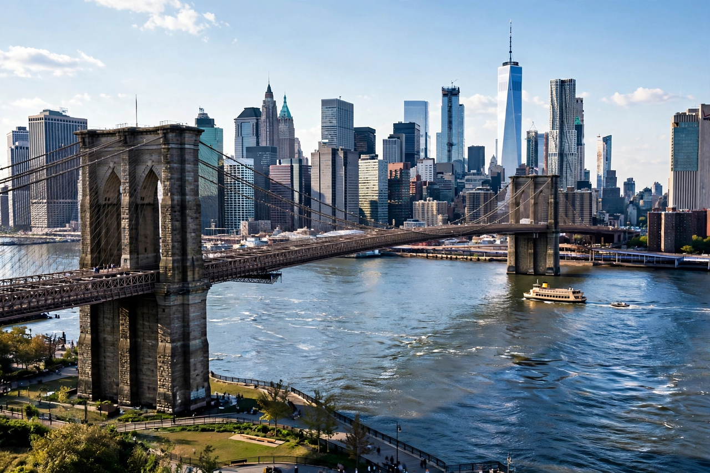

New York City
New York City is the largest city in the United States, made up of five boroughs — Manhattan, Brooklyn, Queens, the Bronx and Staten Island. Wikivoyage splits its New York coverage into borough and neighbourhood guides, covering arrival at JFK, LaGuardia and Newark, the subway, and the city's museums, theatres and food.

[Image: The Manhattan skyline from Brooklyn across the East River]
See
Times Square, Central Park, the Statue of Liberty, the Empire State Building, the Metropolitan Museum of Art and Broadway are the classic headline sights.
Practicalities
The guide explains MetroCard / OMNY fares, tipping, safety by neighbourhood, and day trips up the Hudson Valley and to Long Island beaches.